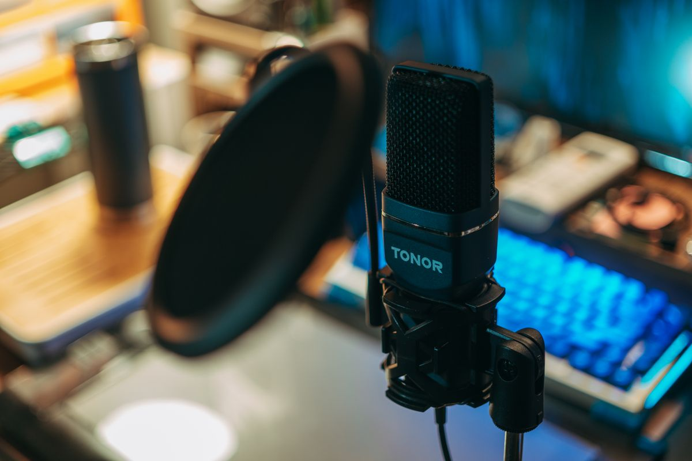

อุปกรณ์เสริมประชุมออนไลน์บนโต๊ะทำงาน เว็บแคม ไมค์ หูฟัง เลือกแบบไหนให้ดูโปร 2026
รวมอุปกรณ์เสริมประชุมออนไลน์ที่ช่วยยกระดับภาพและเสียง ทั้งเว็บแคม ขาตั้งกล้อง ไมโครโฟน USB หูฟังตัดเสียงรบกวน และไฟส่องหน้า พร้อมเกณฑ์เลือกซื้อ
อัปเดต กรกฎาคม 2026การทำงานแบบไฮบริดหรือ work from home ทำให้การประชุมออนไลน์กลายเป็นกิจวัตรประจำวันของใครหลายคน แต่หลายครั้งที่ภาพเบลอ เสียงแตก หรือมีเสียงรบกวนจากพัดลมและเสียงพิมพ์งานแทรกเข้าไปในสาย ก็ทำให้ภาพลักษณ์การทำงานดูไม่เป็นมืออาชีพเท่าที่ควร บทความนี้รวมอุปกรณ์เสริมสำหรับการประชุมออนไลน์ที่ช่วยยกระดับทั้งภาพและเสียงให้ดูเป็นมืออาชีพมากขึ้น โดยไม่ต้องลงทุนสูงเกินไป
ทำไมคุณภาพภาพและเสียงในที่ประชุมออนไลน์ถึงสำคัญ
กล้องในตัวโน้ตบุ๊กส่วนใหญ่ถูกออกแบบมาให้ใช้งานพื้นฐานเท่านั้น ความละเอียดต่ำ มุมกล้องแคบ และมักอยู่ต่ำกว่าระดับสายตาทำให้ภาพดูไม่สวย ส่วนไมโครโฟนในตัวก็มักรับเสียงรอบข้างเข้ามาปนกับเสียงพูด ทำให้คู่สนทนาฟังลำบาก การลงทุนกับอุปกรณ์เสริมเพียงเล็กน้อยจึงช่วยให้การประชุมออนไลน์มีประสิทธิภาพขึ้นอย่างเห็นได้ชัด ทั้งในแง่ความน่าเชื่อถือและความสะดวกในการสื่อสาร
รวมอุปกรณ์เสริมสำหรับประชุมออนไลน์ที่ควรมีติดโต๊ะ
1. เว็บแคมความละเอียดสูงพร้อมปรับโฟกัสอัตโนมัติ
เว็บแคมแยกที่มีความละเอียดตั้งแต่ 1080p ขึ้นไป ให้ภาพที่คมชัดและสีสันเป็นธรรมชาติกว่ากล้องในตัวโน้ตบุ๊กมาก หลายรุ่นมีระบบปรับแสงอัตโนมัติที่ช่วยให้หน้าดูสว่างสม่ำเสมอแม้อยู่ในห้องแสงน้อย เว็บแคมความละเอียดสูงสำหรับประชุมออนไลน์ เหมาะกับคนที่ต้องประชุมวิดีโอบ่อยและอยากให้ภาพดูมืออาชีพขึ้นทันที
2. ขาตั้งเว็บแคมปรับระดับความสูง
การวางกล้องให้อยู่ระดับสายตาช่วยให้ภาพดูเป็นธรรมชาติกว่าการเงยหรือก้มกล้อง ขาตั้งแบบปรับความสูงได้จะช่วยแก้ปัญหานี้โดยไม่ต้องหาของมาหนุนจอ ขาตั้งเว็บแคมปรับระดับความสูง ใช้งานร่วมกับที่วางจอแบบยกสูงได้ดี ช่วยให้มุมกล้องอยู่ในตำแหน่งที่เหมาะสมที่สุด
3. ไมโครโฟน USB แบบตั้งโต๊ะ

ไมโครโฟนแยกช่วยตัดเสียงรบกวนรอบข้างและทำให้เสียงพูดฟังชัดเจนขึ้นมาก เหมาะสำหรับคนที่ต้องพรีเซนต์งานหรือประชุมกับลูกค้าบ่อย ๆ ไมโครโฟน USB สำหรับตั้งโต๊ะทำงาน หลายรุ่นมาพร้อมขาตั้งกันสั่นสะเทือนในตัว ช่วยลดเสียงเคาะโต๊ะหรือเสียงพิมพ์งานที่อาจแทรกเข้าไมค์
4. หูฟังตัดเสียงรบกวนพร้อมไมค์ในตัว
สำหรับคนที่ทำงานในพื้นที่ที่มีเสียงรบกวนเยอะ เช่น ที่บ้านที่มีคนพลุกพล่าน หูฟังแบบตัดเสียงรบกวน (noise cancelling) พร้อมไมค์บูมในตัวจะช่วยให้ทั้งฟังและพูดชัดเจนขึ้นโดยไม่ต้องพึ่งลำโพงและไมค์แยก หูฟังตัดเสียงรบกวนสำหรับประชุมออนไลน์ เป็นอุปกรณ์ที่คุ้มค่าเพราะใช้ได้ทั้งประชุมงานและฟังเพลงระหว่างทำงานเดี่ยว
5. ไฟส่องหน้าสำหรับวิดีโอคอลโดยเฉพาะ
แสงที่ไม่พอเป็นอีกปัญหาที่ทำให้ภาพในที่ประชุมออนไลน์ดูมืดหรือมีเงาผิดตำแหน่ง ไฟส่องหน้าแบบตั้งโต๊ะหรือหนีบกับจอที่ปรับความสว่างและโทนสีได้ ช่วยแก้ปัญหานี้ได้ตรงจุด ไฟส่องหน้าสำหรับวิดีโอคอล แนะนำให้เลือกรุ่นที่ปรับโทนสีได้ตั้งแต่แสงขาวไปจนถึงแสงวอร์ม เพื่อให้เข้ากับสภาพแสงในห้องของแต่ละคน
เกณฑ์การเลือกซื้ออุปกรณ์ประชุมออนไลน์
ลักษณะงานที่ทำ ถ้าต้องพรีเซนต์หรือประชุมกับลูกค้าภายนอกบ่อย ควรลงทุนกับเว็บแคมและไมค์คุณภาพสูงเป็นอันดับแรก ส่วนคนที่ประชุมทีมภายในเป็นหลัก อาจเน้นที่หูฟังตัดเสียงรบกวนให้ฟังเสียงทีมงานชัดเจนพอ
สภาพแวดล้อมการทำงาน ถ้าห้องทำงานมีแสงธรรมชาติเพียงพออยู่แล้ว อาจไม่จำเป็นต้องซื้อไฟส่องหน้าเพิ่ม แต่ถ้าห้องมืดหรือมีแสงย้อน ไฟส่องหน้าจะช่วยได้มาก
ความเข้ากันได้กับซอฟต์แวร์ที่ใช้ ควรเช็กว่าอุปกรณ์ที่เลือกรองรับโปรแกรมประชุมที่องค์กรใช้อยู่หรือไม่ เช่น บางไมค์หรือกล้องอาจต้องติดตั้งไดรเวอร์เพิ่มเติม
พื้นที่จัดเก็บ อุปกรณ์อย่างไมค์ตั้งโต๊ะและขาตั้งเว็บแคมอาจกินพื้นที่โต๊ะพอสมควร ควรเลือกรุ่นที่พับเก็บหรือปรับตำแหน่งได้ง่ายเมื่อไม่ได้ใช้งาน
งบประมาณและลำดับความสำคัญ ถ้ามีงบจำกัด แนะนำให้เริ่มจากไมโครโฟนก่อน เพราะเสียงที่ชัดเจนมีผลต่อการสื่อสารมากกว่าภาพที่คมชัดในหลายกรณี
สรุป
อุปกรณ์เสริมสำหรับประชุมออนไลน์ไม่จำเป็นต้องลงทุนพร้อมกันทั้งชุด แนะนำให้เริ่มจากจุดที่เป็นปัญหาที่สุดในการทำงานประจำวันของตัวเองก่อน ไม่ว่าจะเป็นเสียงที่ไม่ชัด ภาพที่มืดหรือเบลอ หรือเสียงรบกวนรอบข้าง เมื่อแก้ปัญหาทีละจุดได้ การประชุมออนไลน์แต่ละครั้งจะราบรื่นขึ้น และช่วยเสริมภาพลักษณ์การทำงานให้ดูเป็นมืออาชีพมากขึ้นด้วย
บทความนี้มีลิงก์ affiliate เมื่อคุณซื้อผ่านลิงก์ เราอาจได้รับค่าคอมมิชชั่นโดยที่คุณไม่ต้องจ่ายเพิ่ม